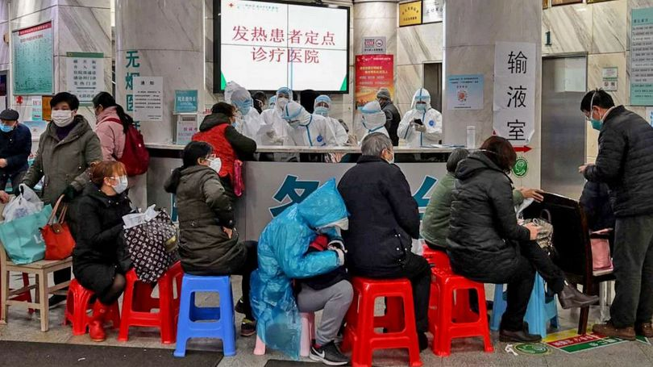
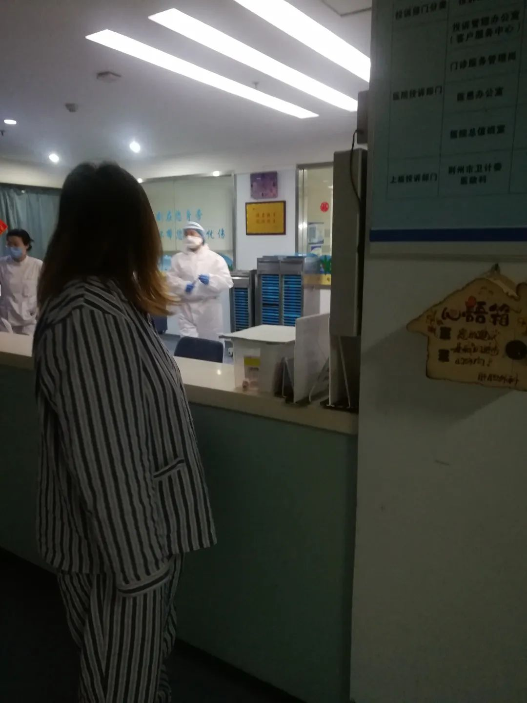
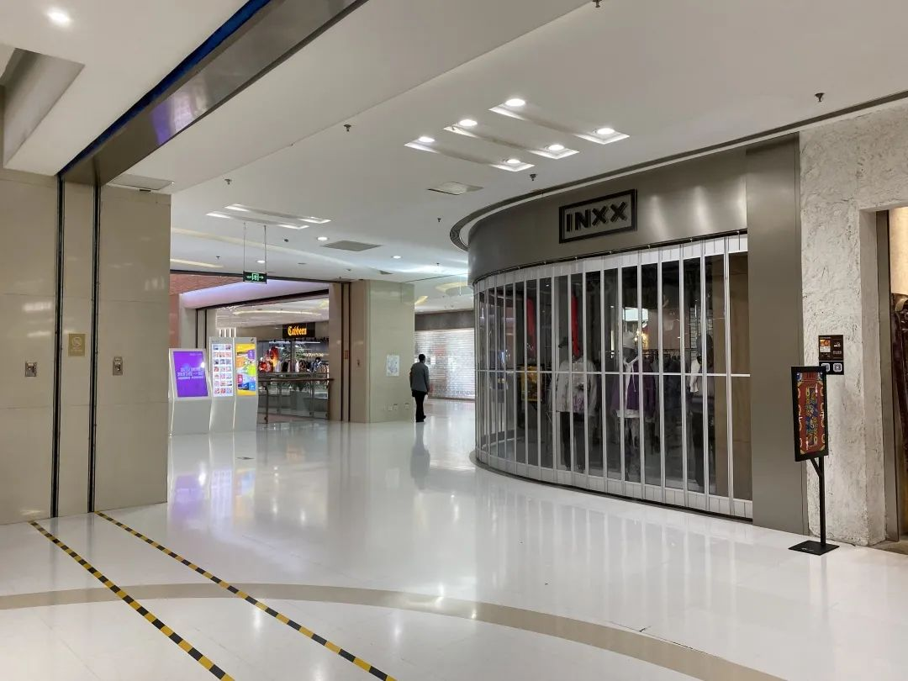
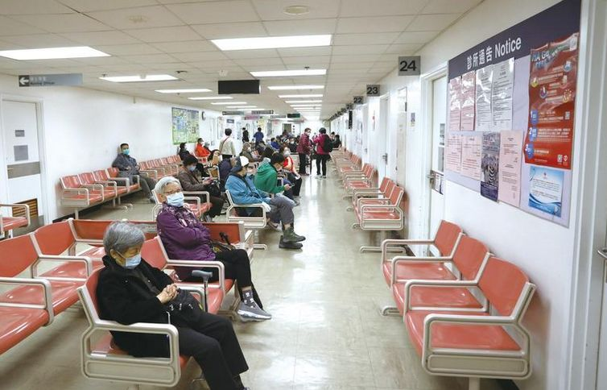

疫情当下，其他疾病患者怎么看病？
原文链接 备份链接 医院呼吁，并不危急的其他疾病患者，可以通过线上咨询、问诊，暂缓前往医院；但该看的病还是要去医院看，千万不要耽误治疗。 记者 | 周 洁 新冠肺炎疫情期间，其他疾病的病人怎么看病？记者连线上海各大医院发现，恢复门诊近一个 …
凌晨，尿毒症患者小黄鸟终于做完了透析回到家；身在湖北的Iris突发胆囊疾病，因疫情生扛2天后终于决定就医；北京的周迎夫妇每日如坐针毡，不知道因疫情推后的恶性肿瘤手术何时能开始……
抗击新冠肺炎是一场全民的战争。然而，在这场战争的另一面，我们生活的世界里还有许许多多其他病人。抗疫硝烟之下，他们还好吗？
凌晨1点，我终于透析完到家了
凌晨1点多，刚做完透析的小黄鸟才回到家。平日经过4个小时的透析，小黄鸟会在到家后点一份外卖当夜宵补充体力。但眼下小区为了防疫，严格控制人员进出，外卖员无法将餐食送到家门口。实在没力气下楼拿外卖和买菜做饭，综合衡量之下，小黄鸟选择泡面作为透析后的夜宵。

血液透析是将血液抽出体外，经透析机去除患者身体不能自行清除的有害物质后，再将血液输回体内的治疗方式丨Wikipedia
“平时透析不会做到这么晚的。”小黄鸟说。自从2015年底被确诊尿毒症后，小黄鸟每周一三五都要到医院进行血液透析。医院的透析室有3个透析时段，早班8点开始，午班大概下午1点半开始，晚班下午6点半开始。为了减少对日常生活的影响，小黄鸟大都选择在晚上前往医院接受透析。新冠疫情发生后，为了严防传染，医院要求所有前来透析的患者量体温、洗手、填表等等，每轮透析后还要对透析室进行消毒，因此晚班经常被拖到晚上8点、9点才能开始。

透析中的小黄鸟丨受访者供图
透析室人多、患者停留时间长、患者免疫力往往较低，这几个因素合在一起，要求血液透析室必须有更强的防疫措施，小黄鸟表示理解。虽然回家晚了一些，但好在这所医院一直没有停止提供透析治疗，小黄鸟和病友们也没有遇上太大的问题，“如果疫情持续，可以养成晚睡晚起的习惯来适应吧。”
我在湖北切胆囊
荆州市是湖北省内最大的疫区之一，截止到2020年3月5日24时，这里累计有1580人被确诊患上了新冠肺炎。Iris和父母就住在这个城市的沙市区。
2月26日，Iris感到了难以忍受的背部疼痛和剧烈呕吐，但因为担心被传染新冠肺炎，所以拒绝了父母要带她去医院的建议。直到28日早上8点，因为疼痛已两个晚上未眠的Iris下定决心：“去他的疫情，必须去医院了！”

武汉，排队就诊的患者丨ABC news
根据荆州市卫生健康委员会公布的信息，2月20日以后，市内的急危重症、孕产妇、儿童、恶性肿瘤、血液透析等患者，都有医院可以接受，就医渠道得到了保障，但仍然不建议非急重症患者前往医院。
然而，毕竟身在疫情期间的重灾区，就医总不是挂号排队等叫号这么简单。由于疫情原因，医院里很多通道封闭，母亲推着轮椅上的Iris绕来绕去，才做完了Iris的术前检查；患者和家属都要做的体温检查、胸部CT以及血常规检查，以排除新冠肺炎的可能性。

荆州的一家医院丨受访者供图
最终，Iris被诊断为胆囊结石和急性胆囊炎，需要立刻手术切术胆囊，“医生说还是该早点去的，再拖几天就没法用腹腔镜做微创手术了。”Iris说。
手术前的准备工作也比平时复杂：要实施腹腔镜手术，需要向麻醉科主任请示，再传达到院长一级进行审批；呼吸科也会参与进来，通过线上查看CT结果，再次确认手术患者没有感染新冠肺炎，“据说手术室都有些日子没用了”。

Iris在医院丨受访者供图
为了预防新冠病毒交叉感染，1间病房只能住1个病人，陪护家属也只能有1人。在母亲的陪护下，Iris的恢复挺顺利。4天后，她出院回到家中，一边休养，一边继续过着足不出户的隔离生活。
不敢说我们还能不能等
相比之下，北京的周迎（化名）夫妇经历着真正的煎熬。
去年10月，周迎的丈夫被确诊为胃癌，进行了三期化疗后在家休养。按照原来的计划，周迎的丈夫会在春节后接受手术，在治疗的同时，也可以根据手术的情况确定下一步治疗方案，两人期待着手术能给病情带来好的转机。谁也没想到，手术计划因为突如其来的疫情搁浅了。

疫情期间，北京空荡荡的商场丨作者摄
周迎夫妇的经历绝非个例。1月29日到2月3日，北京12345热线收到关于肿瘤治疗的问题就有36件[1]。北京大学肿瘤医院发布的《关于新型冠状病毒疫情期间肿瘤诊治的建议》中指出，中晚期肿瘤的手术等待时间对治疗结局影响较大，可以通过多学科会诊讨论调整治疗方案，尽早开始化疗等治疗；早期肿瘤患者病情进展较慢，延期手术的弹性更大一些。
周迎告诉果壳，疫情期间血库供应紧张，不一定能保障手术中的用血量，一旦失血非常危险，加上手术后住在病房里，疫情管控又是个问题，可别下手术台又染上肺炎，所以自己能理解医院的举措。但身为患者的家人，内心如坐针毡的不安，又是真实存在的，“不是每个癌症病人都可以用手术来治疗，先生刚好有手术指征，我们真的不愿意这个机会拖着拖着就没了。”

微博“肺炎患者求助”话题中，有许多来自恶性肿瘤患者和家人的求助微博丨微博截图
也不是没想过其他办法，“去其他医院看病的话，需要把各种检查再做一次，太耽误时间；去外地甚至外国就医也不是没考虑过，但国内疫情还没解除，近的日本、韩国，疫情也很严重，去哪儿都一样。只能等，没办法，现在只能等。”
目前周迎丈夫的身体情况还算稳定，按照医嘱在家养病、锻炼，为不知何时的手术做着准备。夫妇俩计划等到三月中下旬，如果那时还不能做手术的话，就必须得做其他决定了，“因为不敢说我们还能不能继续等下去”。
我的工作时间比平时更长
作为患者和患者家人，看到的是治疗延误、科室停诊，但在医护人员看来，工作一刻也没有停歇。
就职于四川的一家医院老年科的医生黄燕妮（化名）告诉果壳，急诊科、感染科、ICU近半的医护人员已被调往防疫一线，同时外地进修医生因疫情不能来医院。在防疫人手不足的情况下，不仅所有科室都需要参与新冠肺炎的初筛工作，“就连实习生、后勤人员也要帮忙量体温和分诊。”

武汉的一家医院，医护人员正在对患者进行治疗丨Reuters
与黄燕妮的体验相同，北京的肿瘤科医生赵峰（化名）说：“其实我的工作时间比平时要长”。即使不需要立刻进行的择期手术（如良性肿瘤切除）和限期手术（如恶性肿瘤切除）被推迟，一部分化疗患者因疫情暂停了治疗，也并不意味着这些科室的医护人员就放假了。“除了转为前线和院内防疫外，大部分同事都在岗，不过换成了在网上工作”，赵峰说，“很多患者都急着来北京，但因为疫情来不了啊。我每天都要跟很多患者联系，帮忙沟通协调当地的医院，让他们就近治疗。”
疫情的隐性问题
截止到3月5日，共有40000多名医护人员从全国各地前往湖北抗疫一线。黄燕妮承认，抽调医护人员支援湖北，确实会对当地患者就医造成影响，“除了关闭的科室外，可以来就诊的患者也会遇到问题，比如常来的慢性病患者找不到熟悉的医生，沟通效率就会变低；坐诊的医生少了，患者来了也要多等一段时间。而且越是大医院，这种现象越明显。”

香港的一家医院里，患者正在等候就诊丨CHINA DAILY
“流行病会造成两类问题，一类是显性的，比如湖北迫在眉睫的疫情，大家在疫情的第一阶段就能注意到它、去解决它；还有一类是隐性的，到了第二阶段才会被人关注到，比如医疗资源集中于新冠肺炎。”中国社会科学院大学讲师苏春艳说。
疫情爆发至今已近2个月，我们应该把更多的目光放到受隐性问题影响的群体身上，去打通一个帮助他们的通道，让隐性问题得到缓解，“举个例子，武汉的其他急病患者，可以离开武汉到其他省市去治疗吗？”苏春艳说，“我觉得是可以的。不一定是政府，还可以由一些非政府组织、民间组织来帮忙，政府给他们一些弹性的操作空间，让这些患者得到妥善的安置。”
砖头不够的时候，拆东墙补西墙未尝不可，但位于东墙下的人，不应该忍受太久的寒冷：希望小黄鸟可以按时做完透析、到家吃一顿丰盛大餐补补身体，Iris今后再也不必因疾病流行耽误病情，更希望周迎的丈夫早日接受治疗，一家人幸福平安。
参考资料
参考资料：
[1]http://www.bjnews.com.cn/feature/2020/02/05/684557.html
作者：李小葵
编辑：Luna

本文来自果壳，未经授权不得转载.
如有需要请联系sns@guokr.com

文章已于修改
原文链接 备份链接 医院呼吁，并不危急的其他疾病患者，可以通过线上咨询、问诊，暂缓前往医院；但该看的病还是要去医院看，千万不要耽误治疗。 记者 | 周 洁 新冠肺炎疫情期间，其他疾病的病人怎么看病？记者连线上海各大医院发现，恢复门诊近一个 …
原文链接 备份链接 *************▲*************2020年1月31日，发热门诊收费员穿着防护服工作。（新华社/图） 全文共3713字，阅读大约需要8分钟。 一些原本节假日还忙着开会“飞刀”的外科医生，最近基本 …
原文链接 备份链接 口述实录·火线 养兵千日用在一时，大型公共卫生事件一发生，这些关键的“苦”学科就会为国计民生，甚至民族存亡提供重要保障。 记者｜黄 祺 武汉新冠肺炎的救治压力趋缓，无论是普通市民还是医护人员，都期待着疫情彻底结束的这一 …
原文链接 备份链接 非肺炎患者，是一个疫情出现前不曾有过的词语。新冠病毒重塑了经济、公共空间以及人们的日常生活，像涟漪一般扩散，将原本看似在外围的人收纳进被影响的范围。交通封锁，物流不畅，医院被征用，医生被调走，种种问题出现，波及到新冠肺 …
原文链接 备份链接 “ - 疫 情 之 下 - 由于医疗资源集中在新冠的防治上，他们求医问药的每一步，在这场劫难中都显得异常艰辛。 ” 1 2月4日，正是疫情暴发期。 各个医院门诊挤满了发热患者，医院病房依旧一床难求。我服从医院安排，被调 …